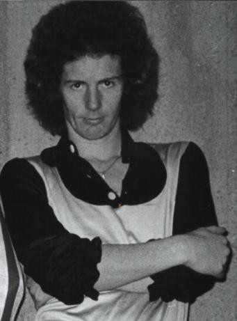
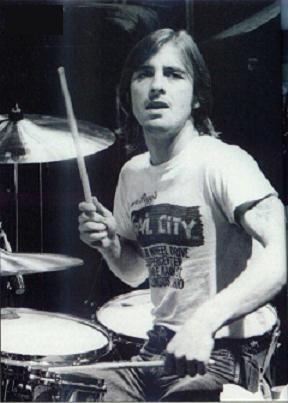

T.N.T. (1975)
T.N.T é o segundo álbum de estúdio da banda australiana de Hard Rock AC/DC. Levou apenas três semanas para ser gravado e seu sucesso foi tamanho que a gravadora se interessou em lançá-lo no mercado internacional.
Com a excelente aceitação do público, Malcolm Young e Bon Scott tiveram que convencer aos outros membros da banda de que seria melhor que se mudassem para a Inglaterra. Assim sendo, em fevereiro de 1976 eles estavam morando numa casa no subúrbio londrino de Barnes, onde apesar de pouco conforto, podiam tocar até altas horas e no volume que quisessem.
Levou pouquíssimo tempo desde a mudança até eles começarem a tocar nos mais famosos clubes de Londres, dos quais o que mais se destaca é o Marquee Club (um templo do rock que já foi palco de grandes bandas desde Rolling Stones até o Sepultura).
Na faixa de abertura, Bon Scott toca um solo de Gaita de Fole, instrumento o qual ele aprendeu a tocar na Escócia, quando jovem.
Gênero(s): Hard rock - blues - rock - rock and roll
Duração do album: 41 min 55 seg
Gravadora(s):Albert Productions
Produção: Harry Vanda, George Young
Hard rock é um estilo musical, subgênero do rock que tem suas raízes do rock de garagem e psicodélico do meio da década de 1960, que se caracteriza por ser consideravelmente mais pesado do que a música rock convencional, e marcada pelo uso de distorção, uma seção rítmica proeminente, arranjos simples e um som potente, com riffs de guitarra pesada e solos.
O blues é um gênero e forma musical originado por afro-americanos no extremo sul dos Estados Unidos em torno do fim do século XIX. O gênero se desenvolveu a partir de raízes das tradições musicais africanas, canções de trabalho afro-americanas, spirituals e música tradicional
O Rock é um termo abrangente que define um gênero musical de música popular que se desenvolveu durante e após a década de 1950. Suas raízes se encontram no rock and roll e no rockabilly que emergiram e se definiram nos Estados Unidos no final dos anos
quarenta e início dos cinquenta e que, por sua vez, evoluíram do blues, da música country e do rhythm and blues. Outras influências musicais sobre o rock ainda incluem o folk, o jazz e a música clássica.
Todas estas influências foram combinadas em uma estrutura musical simples baseada no blues que era "rápida, dançável e pegajosa"
O rock and roll, conhecido também como rock'n'roll, é um estilo musical que surgiu nos Estados Unidos no final dos anos 1940 e início dos anos 1950, com raízes nos estilos musicais norte-americanos, como: country, blues, R&B e gospel, e que rapidamente
se espalhou para o resto do mundo.
O instrumento mais comum neste estilo é a guitarra, sempre presente nas bandas, podendo possuir um único instrumentista, ou dois com funções diferenciadas (guitarrista base e solo).
Créditos
- Bon Scott – vocais
- Angus Young – guitarra solo
- Malcolm Young– guitarra rítmica, backing vocals, baixo, guitarra solo nas faixas 3, 5, 6 e 8
- George Young – produção, baixo, guitarra rítmica, bateria, backing vocal
- Rob Bailey– baixo
- Tony Currenti– bateria
- Peter Clack– bateria na faixa 2
- John Proud– bateria na faixa 3
 Ronald Belford Scott (Kirriemuir, 9 de julho de 1946 — Londres, 19 de fevereiro de 1980) foi um cantor e compositor australiano nascido na Escócia. Ele ficou mundialmente
conhecido por ser vocalista e compositor da banda de rock australiana AC/DC de 1974 a 1980.
Ronald Belford Scott (Kirriemuir, 9 de julho de 1946 — Londres, 19 de fevereiro de 1980) foi um cantor e compositor australiano nascido na Escócia. Ele ficou mundialmente
conhecido por ser vocalista e compositor da banda de rock australiana AC/DC de 1974 a 1980.
Em 2006, a revista Hit Parader colocou Scott como o quinto melhor vocalista de heavy metal de todos os tempos.
Iniciou sua carreira com a banda The Spektors e, logo depois, formou The Valentines, onde conheceu seu amigo, Vince Lovergrove, que trabalharia em seu próximo projeto o Fraternity. Logo após a separação do grupo, integrou
o AC/DC onde lançou sete discos e morreu logo após o lançamento do último álbum com Bon nos vocais Highway to Hell, que os alçou à fama mundial. Após sua morte, Brian Johnson assumiu o vocal.
 Angus McKinnon Young (31 de março de 1955, em Glasgow, Escócia) é um guitarrista e compositor, conhecido por ser guitarrista solo, compositor, líder e co-fundador
da banda de hard rock australiana AC/DC.
Angus McKinnon Young (31 de março de 1955, em Glasgow, Escócia) é um guitarrista e compositor, conhecido por ser guitarrista solo, compositor, líder e co-fundador
da banda de hard rock australiana AC/DC.
No ano de 2003, foi introduzido juntamente de Malcolm Young, Brian Johnson e outros membros do AC/DC no Rock and Roll Hall of Fame.
Foi considerado o 24.º melhor guitarrista de todos os tempos pela revista norte-americana Rolling Stone. Um dos maiores guitarristas da história do Rock and Roll e considerado pela grande maioria o maior riffer de todos os tempos.
 Malcolm Mitchell Young (Glasgow, 6 de janeiro de 1953 — Sydney, 18 de novembro de 2017) foi um guitarrista e compositor escocês naturalizado australiano e fundador,
junto com seu irmão mais novo Angus Young, da banda de rock australiana AC/DC, da qual era o guitarrista rítmico, vocalista de apoio e compositor.
Malcolm Mitchell Young (Glasgow, 6 de janeiro de 1953 — Sydney, 18 de novembro de 2017) foi um guitarrista e compositor escocês naturalizado australiano e fundador,
junto com seu irmão mais novo Angus Young, da banda de rock australiana AC/DC, da qual era o guitarrista rítmico, vocalista de apoio e compositor.
É o compositor de todas as canções do grupo, juntamente com seu irmão e Bon Scott/Brian Johnson. É bastante conhecido pelos riffs que criou, como por exemplo, o de Back in Black. Foi nomeado ao Rock and Roll Hall of Fame em 2003 com os outros membros
do AC/DC. Esteve com a banda desde sua fundação em 1973, apesar de uma breve ausência em 1988, sendo o o líder da banda e quem tomava as decisões principais.
Em 2014 Malcolm Young afastou-se da banda por estar sofrendo de demência. Morreu a 18 de novembro de 2017, aos 64 anos.
 Alfred Redburn Young (Cranhill, Escócia, 6 de novembro de 1946 - Sydney, Austrália, 22 de outubro de 2017) foi um músico australiano de rock, compositor e produtor
musical, mais conhecido como integrante da banda australiana da década de 1960 The Easybeats, o co-autor de sucessos internacionais, tais como "Friday on My Mind" e "Love Is in the Air", e por sua produção da banda de hard rock AC/DC,
integrada por seus irmãos mais novos Malcolm e Angus Young.
Alfred Redburn Young (Cranhill, Escócia, 6 de novembro de 1946 - Sydney, Austrália, 22 de outubro de 2017) foi um músico australiano de rock, compositor e produtor
musical, mais conhecido como integrante da banda australiana da década de 1960 The Easybeats, o co-autor de sucessos internacionais, tais como "Friday on My Mind" e "Love Is in the Air", e por sua produção da banda de hard rock AC/DC,
integrada por seus irmãos mais novos Malcolm e Angus Young.
 Rob Bailey é um ex-baixista da banda de rock australiana AC/DC. Ele juntou-se à banda em abril de 1974, na época formada por Malcolm Young (guitarra rítmica), Angus
Young (guitarra solo), Dave Evans (vocal) e Peter Clack (bateria).
Rob Bailey é um ex-baixista da banda de rock australiana AC/DC. Ele juntou-se à banda em abril de 1974, na época formada por Malcolm Young (guitarra rítmica), Angus
Young (guitarra solo), Dave Evans (vocal) e Peter Clack (bateria).
Bailey foi integrante da banda durante a gravação de seu álbum de estreia High Voltage, embora o crédito para o baixo na gravação tenha ido para George Young.
Foi um dos integrantes mais regulares da seção rítmica da banda durante 1974, continuando até janeiro de 1975, quando foi demitido juntamente com Clack. Apareceu na mais antiga filmagem de vídeo do AC/DC, que se tem registro, o vídeo Last Picture Show
Theatre de "Can I Sit Next To You".
Após sua saída, o AC/DC não teve um baixista regular até a chegada de Mark Evans em março de 1975; durante esse período a posição foi ocupada por Larry Van Kriedt, Malcolm Young, seu irmão mais velho George Young, e ocasionalmente
por Paul Matters.
 Tony Currenti é um baterista australiano de ascendência italiana, mais conhecido como baterista de sessão da banda australiana de hard rock AC / DC (álbum de estreia
de 1975 High Voltage , o single " High Voltage ".
Tony Currenti é um baterista australiano de ascendência italiana, mais conhecido como baterista de sessão da banda australiana de hard rock AC / DC (álbum de estreia
de 1975 High Voltage , o single " High Voltage ".
Foi no início de 1974, que George Young abordou Currenti e perguntou se ele gravaria com seus dois irmãos mais novos em uma banda chamada AC / DC. O álbum foi chamado de High Voltage e Tony tocou bateria em todas as faixas, exceto uma (" Baby, Please
Don't Go " que foi gravada por Peter Clack ). Depois de gravar o álbum, Currenti foi convidado a se juntar ao grupo, mas recusou por dois motivos;
Um, Currenti era leal à sua banda atual Jackie Christian & Flight e Dois, ele era um cidadão italiano com um passaporte italiano que não permitia que ele viajasse livremente pela Inglaterra ou Europa com a banda sem ser chamado
para o serviço militar.
 Peter Clack é um ex-baterista da banda de rock australiana AC/DC. Ele juntou-se à banda em abril de 1974, na época formada por Malcolm Young (guitarra rítmica), Angus Young (guitarra solo), Dave Evans (vocal) e Rob Bailey (baixo elétrico).
Foi um dos integrantes mais regulares da seção rítmica da banda durante 1974, continuando até janeiro de 1975, quando foi demitido juntamente com Bailey. Apareceu na mais antiga filmagem de vídeo do AC/DC, que se tem registro, o vídeo Last Picture Show
Theatre de "Can I Sit Next To You".
Foi integrante da banda durante a gravação de seu álbum de estreia High Voltage, mas aparentemente não contribuiu muito para ele. A maioria das partes gravadas da bateria teve a participação de Tony Currenti. O substituto definitivo
de Clack foi Phil Rudd.
 (... Sem informações...)